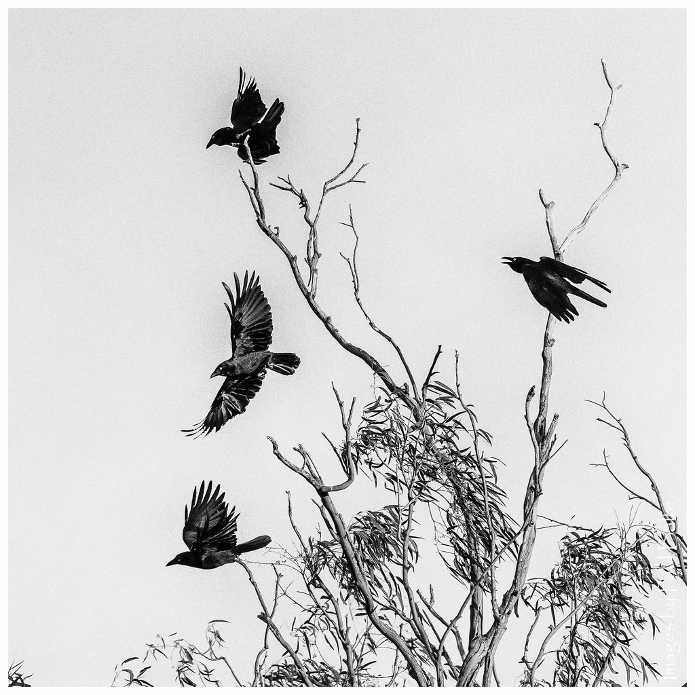
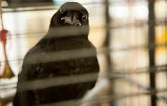
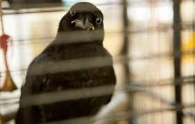
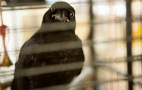
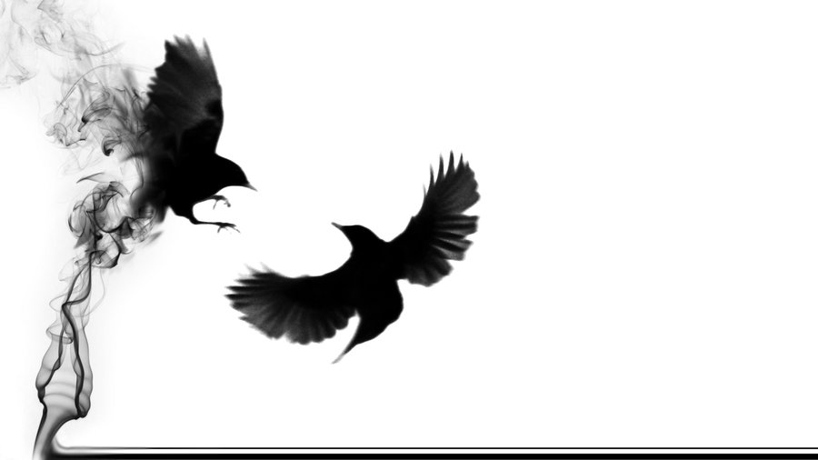
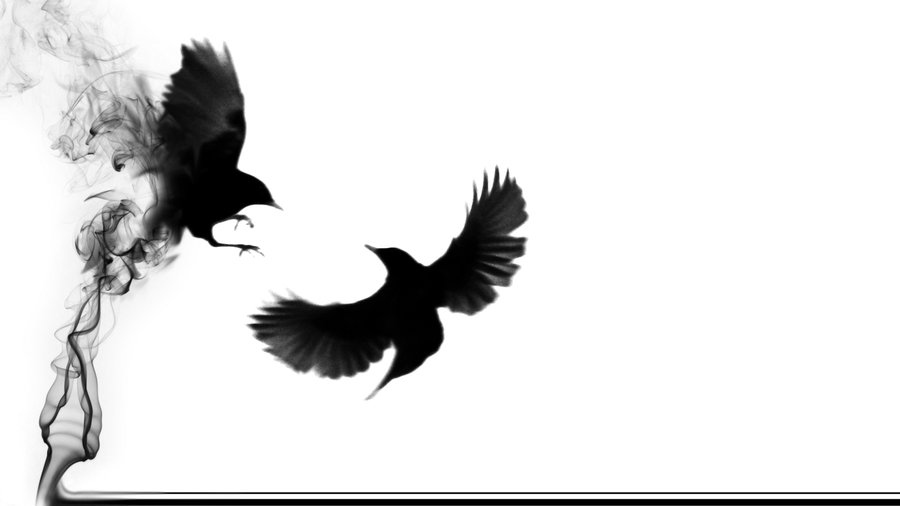

Did you know that a group of crows was called a murder of crows?

 


While crows and ravens are very similar, crows are generally smaller and have a green tint to their wings rather than blue


Crows are associated with the Irish triple goddess Morrigan who appears as a battle crow at times
 

For the ancient Greeks, crows were sometimes symbols of Apollo, specific to his role of prophecy